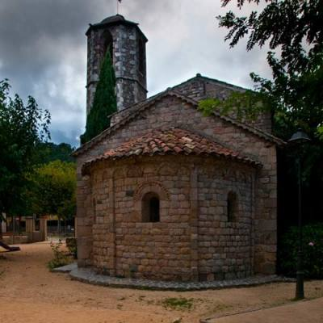

Visita · Gualba
L'església de Sant Vicenç presideix el centre de Gualba, davant de la plaça de Joan Ragué. De l'edifici romànic se'n conserven sobretot l' absis , amb arcs cecs i bandes llombardes a l'exterior, i…